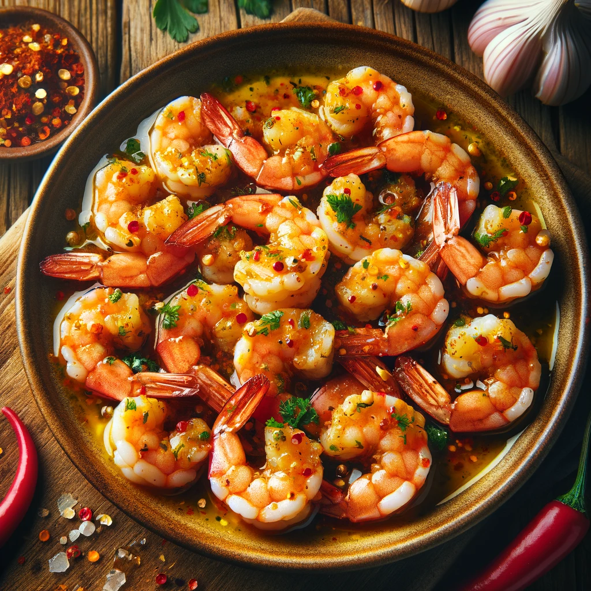

Creamy Mushroom Risotto

Description
This Spicy Garlic Shrimp recipe is a quick and easy dish that packs a punch of flavor, making it perfect for a weeknight dinner or a special occasion. Juicy, plump shrimp are sautéed in olive oil with a generous amount of garlic and a sprinkle of red pepper flakes, creating a beautifully spicy and aromatic dish. The shrimp are then simmered in a light broth, accentuated with the freshness of lemon juice, and finished with a touch of butter for a rich, glossy sauce. Garnished with chopped parsley, this dish not only tantalizes the taste buds with its spicy and garlicky notes but also presents a feast for the eyes with its vibrant colors. Serve this dish over a bed of pasta, rice, or enjoy it as is for a delectable seafood experience that's both simple and indulgent.
Ingredients
- 500g large shrimp, peeled and deveined
- Salt and pepper, to taste
- 1 tablespoon olive oil
- 6 cloves garlic, finely minced
- 1 teaspoon red pepper flakes (adjust to taste)
- 1/2 cup chicken broth
- Juice of 1 lemon
- 2 tablespoons fresh parsley, chopped
- 2 tablespoons unsalted butter
Steps
- Season the shrimp with salt and pepper.
- Heat the olive oil in a large pan over medium-high heat. Add the shrimp and cook until they turn pink and opaque, about 2 minutes per side. Remove the shrimp from the pan and set aside.
- In the same pan, add the minced garlic and red pepper flakes. Cook for about 1 minute, or until the garlic is fragrant but not browned.
- Add the chicken broth and lemon juice to the pan. Bring the mixture to a simmer, scraping up any browned bits from the bottom of the pan.
- Return the shrimp to the pan and stir in the parsley and butter. Cook until the butter is melted and the shrimp are heated through, about 1-2 minutes.
- Serve the spicy garlic shrimp immediately, garnished with additional parsley if desired.